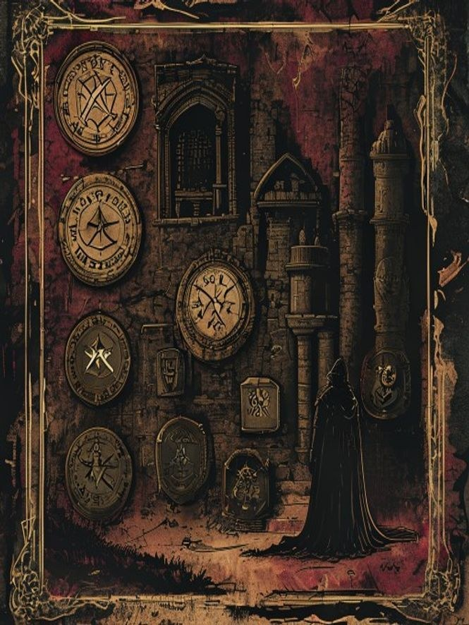
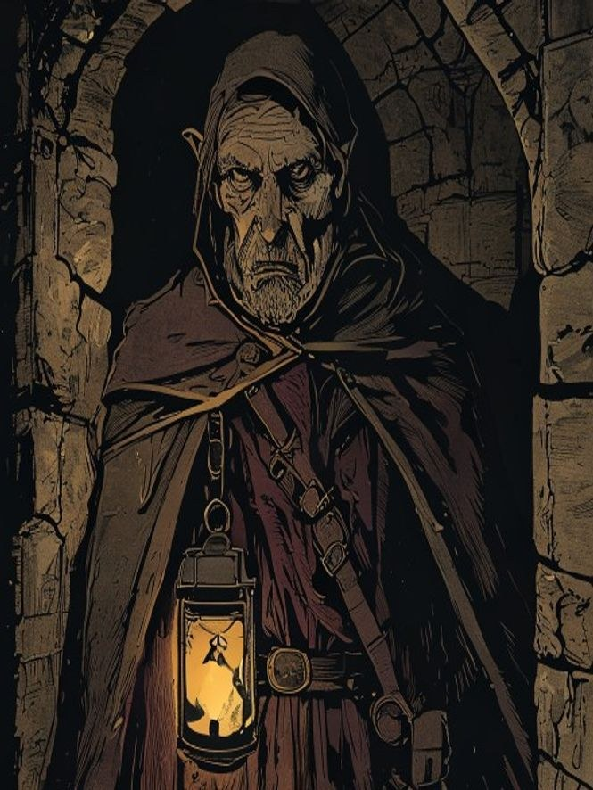
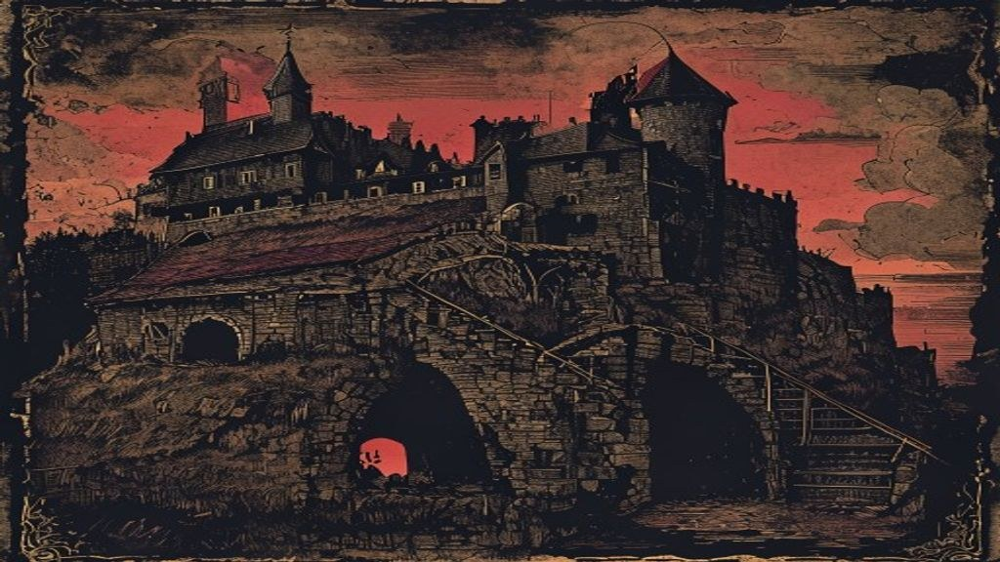
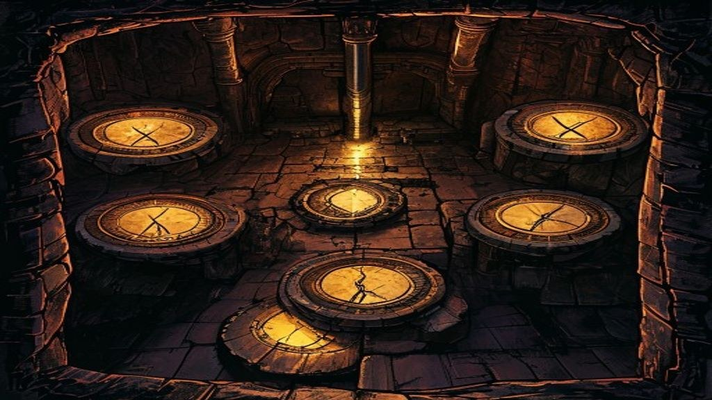
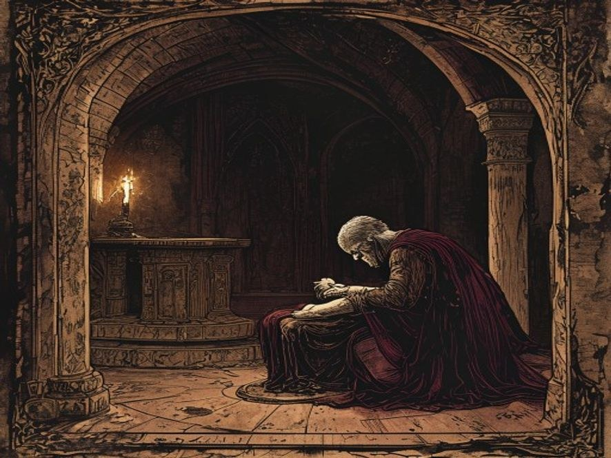
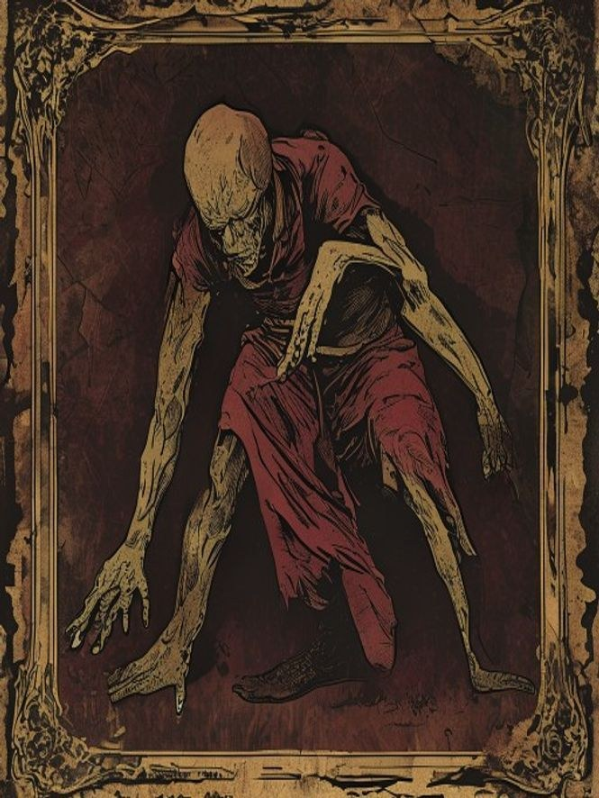
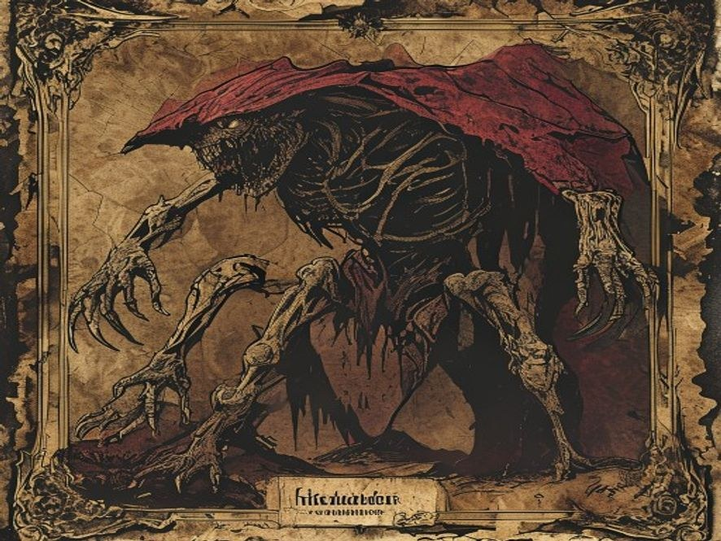

On screen for the table · tap DM Tools for dice, an initiative tracker pre-loaded with this dungeon's creatures, and the Ward VII spreading clock · or press Ctrl/Cmd + P to print or save as PDF (it switches to a light, ink-friendly layout automatically).
The Founder's Vault · Finder's Edition
A rescue that turns into a confession. The win is mercy, not a kill.
At a glance — 4 characters · level 3 (scales 1–10, parties of 3–6) · one 3–4 hour session · quiet, then wrong. Seven old wards under a ruined keep have kept a grieving man's dead family asleep for forty years. One ward just broke — and he is so tired. You can't out-fight the Sealer; you can only give him permission to stop.

You found seven runes. Most people who visit the site never see one. You found all of them, in order, and they led you here.
So this one's yours. It's set under Brackenford — the village with the broken bridge and the standing stones and the ruined keep on the hill. The free version leaves the cellars of Caer Brack a mystery. It says the depths are best left undescribed. That was the polite lie. Here's the truth, written down once, for the people who went looking.
Run it for a table you trust. The win isn't a kill. The villain isn't wrong, exactly — that's the whole problem.
Welcome to the vault. The Dungeon Master remembers his own.
A child is missing, the only way down is down, and the village is too scared to go.
A girl from Brackenford went down into the cellars of Caer Brack on a dare and didn't come back up. That's the surface of it, and it's enough to move the party: the Broken Wheel posts a reward on the notice board, her mother is at the bar not drinking the ale in front of her, and the hole in the hill is right there above the village.
Under the keep are seven sealed wards. They've held something asleep for forty years. The girl wandered all the way down to the deepest one, read the rune on it aloud, and broke it. By the time the party arrives, one ward is broken and six are still shut — and the man keeping them shut is the reason any of this is sealed at all.
You can open the session at the notice board, at the bar, or at the mouth of the cellar stairs. Five minutes in, the party knows: a child is missing, the only way down is down, and the village is too scared to go themselves.
Read this before the players go down. Everything turns on it.

Forty years ago Alder Venn was the warden of Caer Brack, back when it was a keep and not a ruin. He had a wife, Maren, and two children. There was a sickness in the deep cellar — the old keep was built over something the first builders should have left alone, a slow rot that came up through the stone in bad years. The sickness took his family in nine days. It did not kill them clean. It changed them, hollowed them out, made them walk and want and hunger, and it would have spread to the whole valley.
Alder could not bury them. He could not burn them. So he did the third thing, the thing nobody should be able to do: he carried them down into the deepest cellar and he sealed them in sleep. Seven wards, seven names — his own, his wife's, his two children's, and three he took from the old keep's foundation stones. As long as the seven hold and the names stay spoken, his family sleeps and does not rot and does not hunger. He has held them like that for forty years.
He never aged past the night he made the wards. That was the price. He cannot leave; if he goes more than a few rooms from the wards, they slacken. So he stays. He keeps them. He has been alone in the dark for forty years, refusing the only thing that would end it: letting them go.
Alder is not trying to hurt anyone. He sealed his family precisely so they wouldn't hurt anyone. To him, the wards are mercy. Letting his family die fully — letting them rot, letting them rest — feels to him like murdering them a second time, on purpose, with his own hands. He would rather hold the dark shut forever than admit they are already gone.
To keep the seventh ward, the one the girl broke, from spreading, he will trade. He needs a name spoken to re-seal it, and a living voice to speak it. He has begun, quietly, to consider whether the girl's voice would do. Or one of the party's.
He is exhausted past reason and he wants, more than he can say, for someone to tell him it's allowed to stop. That is the whole adventure: getting a man to put down a weight he's carried so long he's forgotten he's allowed to.
Seven sealing wards, each a stone disc cut with one rune, bound to one spoken name. Six hold. One is broken.
The party will encounter the wards as they descend — not all at once, but as a spine running through the whole dungeon. Each ward is a small scene: a thing held just barely shut, and the proof of what happens when one fails. The broken seventh is the dungeon's climax. The seven names are the puzzle, the threat, and the solution, all at once.
| Ward | Rune (what's carved) | Bound name | State on arrival |
|---|---|---|---|
| I | A closed eye | Maren (the wife) | Holding. Hums faintly. |
| II | A hand, palm out | Coll (the son) | Holding. |
| III | A child's footprint | Wren (the daughter) | Holding, but the stone is cracked. |
| IV | A hearth, banked | (a foundation name) | Holding. |
| V | A river, dammed | (a foundation name) | Holding. |
| VI | A door, barred | (a foundation name) | Holding. |
| VII | A circle, unbroken — now split | Alder's own name | Broken. This is what the girl woke. |
Alder bound the last ward to his own name, so that as long as he lived and spoke, it would hold. The girl, lost and frightened, read the split rune aloud — and a name read by a stranger unbinds instead of binds. That's what broke it. The same rule is the party's way out (see the resolution).
The descent. The point is to make the party feel that this place is held, by someone, on purpose.

The keep is a broken tooth on the hill. The cellar door is gone — just a black square in the floor of a roofless room, and a stair going down into it, worn smooth in the middle the way stairs get when one person walks them for a very long time. The air coming up is cool and clean. That's the first wrong thing. A cellar this old should smell like a cellar. This smells like nothing at all.
The clean air is the wards working — they hold the rot down with the dead. The girl is the same age Wren was the night Alder sealed her — a detail he will fixate on. She came down two days ago.
The stair runs down past Ward I (the closed eye). It hums. If a character touches it or listens, they hear, very faintly, a woman breathing in her sleep. Nothing attacks. The point of Scene 1 is to make the party feel that this place is held, by someone, on purpose.
A child's chalk drawing on the wall halfway down — a house, four stick figures, done forty years ago and never weathered because nothing down here weathers. Beside it, fresh, in a different child's hand: an arrow pointing further down, and the word HELLO?. The lost girl drew it. She went lower.
Finding the girl. The party first hears Alder here — not a fight, a plea.
The stair lets out into a long hall of doors, each shut, each with a name carved over it in a hand that pressed hard. A cup sits on the floor outside one door. Water in it. Set down recently, by someone who meant to come back.
These are the rooms where Alder lived his forty years — one per door, because he sleeps in a different one each night so he can stay near a different ward. The cup is his. He set it down when he heard the party come in and went to watch them.
The girl — her name is Sable, eleven, stubborn — is here, locked in one of the rooms. She is not hurt. Alder put her there to keep her away from the broken ward. He has been feeding her. She is furious, frightened, and convinced the old man is a kidnapper.
"Are you here for me? There's a man. He talks to the walls. He keeps saying he's sorry but he won't let me go up. Please — he's coming back, I heard him."
Run him as a confession, not a fight. He has not had a conversation in four decades.
He's old in the way of a man who stopped counting. Thin. A lantern with no flame in it, that he carries anyway out of habit. When he sees you he doesn't reach for a weapon. He reaches to fix his collar, like he's been caught not ready for company. "Forty years," he says, "and the company they finally send me is armed. Well. You'll do. You can speak, can't you? All of you can speak?"
Alder is measuring them for a job they don't know exists: he needs living voices to re-seal Ward VII, and he is doing the math on whether he can ask, trick, or take. Run him as a confession, not a fight. He is not hostile. He is desperate and tired and he has not had a conversation in four decades.
He'll tell them most of the truth if they let him talk — the sickness, his family, the wards, the price he paid (he doesn't age, he can't leave, he can't sleep more than a few rooms from the stones). He will lie about exactly one thing: that everyone is safe if they just leave now. They are not, because Ward VII is broken and what's behind it is waking.
He keeps almost-saying "we" — "we keep the lower hall swept," "we don't go past the seventh" — and there is no one else alive down here. He's been keeping house with the dead.
The party watches a man embrace the thing that used to be his son.

The lowest cellar is a round room, and the floor is a ring of seven stone discs set flush like the face of a great clock. Six of them glow a steady warm color, the color of a banked fire. The seventh is split clean down the middle, dark, and the crack is breathing — widening a hair, narrowing, widening — and out of it comes the only smell in this whole clean place: turned earth, and under it, sweet, the smell of something that should have been buried a long time ago.
Behind Ward VII is the Unrested — what's left of Alder himself, in a sense (see stat block). When the girl read the split rune, she didn't free a monster; she unbound the ward holding back the spread. The rot is climbing. If left, it reaches Ward VI within the hour, then V, and so on up — and if all seven fall, it comes up the stairs into Brackenford and the Hollow Marches, exactly the thing Alder spent forty years preventing.
What emerges from the crack is one Hollow Sleeper — a sleepwalking dead thing, slow, wrong, wearing a face. Crucially: if Alder is present, it goes to him. It does not attack. It reaches for him the way a sleeping child reaches for a parent, and he holds it, and he weeps, and that is the scene.

"There. There. It's only a dream. Go back to sleep. I'll keep the door. I always keep the door."
The crack is widening. Something has to be done about Ward VII in the next several minutes of game time, and the only people who can do it are standing in the room. (Full treatment on the next page.)
The spine of the one-shot. There is no monster to out-damage.
The "monsters" the party came down to fight are a man's sleeping family, and the "kidnapper" who took the girl took her to protect her from the only real danger. The threat isn't Alder. The threat is that Alder will never let go, and his refusal is what's going to spill the rot up into the world. He is the seal and the leak at once.
Ward VII can be closed three ways. The party will likely discover one or two; a clever party may find all three.
Options 2 and 3 both end with Alder dead and his family at rest, but the good ending is the one where the party gives Alder permission — talks him down, lets him grieve, lets him choose. The lever from his villain profile pays off here: he wants someone to tell him it's allowed to stop. A party that figures that out wins by being kind to a monster, which is the most LIDM thing there is.
Do you save the man by ending his family, or save his family's sleep by chaining someone — him, or one of you — to the dark forever? There is no option where everyone gets to leave and everyone gets to rest. The kindest path costs Alder his life and his denial both. Make sure the players feel that the easy fix (let a teammate take the seal) is the wrong one, and the right fix (give a grieving man permission to die) is the hard one. That tension is the whole reward.
Four ways the night ends. Mercy, the tragic trade, the kill, or abandonment.
They will. Here's where they push, and what holds.
What the dead are dreaming — roll when the party touches a holding ward, listens at a door, or a Hollow Sleeper reaches for them. (Use the DM Tools dice roller for the d8.)
| d8 | The sleeper murmurs… |
|---|---|
| 1 | "Father, you're letting the soup go cold." (Coll, the son, every night for forty years.) |
| 2 | A lullaby with the words worn off, just the shape of the tune left. |
| 3 | "Is it morning? You said you'd wake me when it was morning." |
| 4 | The party's own names — wrong, in a child's voice, as if expecting different people. |
| 5 | "Don't let go of my hand in the market. You promised." (Wren, the daughter.) |
| 6 | Counting. Slow, patient, never reaching a number that means anything. |
| 7 | "Maren, the children are downstairs, I heard them—" (Alder's own voice, leaking through the stone.) |
| 8 | Nothing. The worst one. A held breath that never finishes. |
A round chamber, 40 ft across · 1 square = 5 ft · the floor is the clock: seven 6-ft seal-discs in a ring.
Place it on a VTT or print it for the table. The stair lands on a 10×10 landing at the north so nobody arrives standing on a ward. Standing on a holding ward is safe; the broken Ward VII (A = Alder, H = Hollow Sleeper) sits at 6 o'clock and vents difficult terrain south. Four broken pillars give half-cover; the 12-ft center ring is the only fully safe footing, where the talk-down plays out. The chamber gets darker as wards fail, not lighter.
❖ Stat Blocks — SRD 5.1, original creatures ❖
Alder Venn, the Sealer
Medium humanoid (deathless) · not meant to be fought
AC 11 · HP 38 · Speed 30 ft (never more than ~60 ft from a ward)
Bound to the Wards.Alder's own name is the anchor of Ward VII, and his life is bound into it. He doesn't age, sleep, or starve, and ordinary harm can't kill him, for as long as that binding holds. Only three things end it, and each one lets him finally die: he re-seals Ward VII with his own voice (and goes into the dark with it); all seven wards are unbound; or the binding passes to a new living anchor who speaks his name (then he dies within the day, his duty spent). He has advantage on saves against fear and against being charmed — forty years alone burned those out of him.
The Keeper's Plea (1/turn, no action).When Alder speaks to a creature that can hear him, he may ask it to stay, or speak, or leave — a DC 13 Wisdom save to shake a creature that's wavering. Used not to harm but to keep the party near the wards. This is roleplay first; only call for the save if a player asks "can he make me?"

Hollow Sleeper
Medium undead · the sleeping dead of Caer Brack
AC 9 · HP 22 (4d8+4) · Speed 20 ft (shuffling, asleep on its feet)
Still Dreaming.A Hollow Sleeper does not attack unless attacked, cornered, or kept from the thing it's reaching toward (usually Alder). On its turn it moves toward the nearest familiar voice. If Alder is present and free, it goes to him and takes no hostile action.
Grasp of the Drowsy.Melee Weapon Attack: +4 to hit, reach 5 ft, one target. Hit: 7 (2d4+2) bludgeoning, and the target makes a DC 12 Constitution save or has its speed halved until the end of its next turn (the heavy pull of sleep).
Rest Releases It.A Hollow Sleeper reduced to 0 HP doesn't "die" — it lies down and is still. Speaking its true ward-name over it ends it gently and permanently. Killing it the loud way only stops it for the scene; the rot it carries seeps back toward Ward VII.

The Unrested
Large undead, the rot given a shape · behind Ward VII — only if the seal fully fails
AC 13 · HP 76 (9d10+27) · Speed 30 ft · use only in the dark "all seven fail" branch
Spreading Rot.At the start of each of its turns, if it is within 10 ft of a holding ward, that ward must succeed on a DC 14 saving throw (DM rolls, +0) or crack and begin to fail next round. This is the clock made physical.
Two Slams.Melee Weapon Attack: +6 to hit, reach 5 ft. Hit: 11 (2d6+4) bludgeoning each.
The only true stopis sealing it back behind Ward VII (a name, freely spoken) — not its HP. It will reform from the rot within a day otherwise. Reaching 0 HP just buys the party a round to do the real work.
Levels 1–10 and parties of 3–6. Alder never changes — he's a conversation, not a CR.
| Party level | Hollow Sleepers in the climax | The Unrested (dark branch only) | Notes |
|---|---|---|---|
| 1–2 | 1, and it never wakes hostile unless attacked | Skip it; the spread is the threat | Lean hard on the talk-down; combat is lethal here |
| 3 (default) | 1 active, 1–2 more if they fight | as written (HP 76) | The baseline experience |
| 4–5 | 2–3 | HP ~110, slams 13 (2d8+4) | Add a second cracked ward (VI) to raise the clock |
| 6–7 | 3–4 | HP ~140, +1 slam, DC 16 Spreading Rot | Wards fail two-at-a-time on the clock |
| 8–10 | 4–6, and they coordinate toward the loudest PC | HP ~170, multiattack 3 slams, DC 17 | The Unrested can split into two lesser forms when bloodied |
The bones are system-agnostic — the real engine is a conversation under a ticking clock.
The one thing not to change in any system: Alder is never the boss fight. He's the boss conversation.
Original content © Long Island Dungeon Master. Built using the System Reference Document 5.1, available under the Creative Commons Attribution 4.0 International License (CC-BY-4.0). This work is not affiliated with, endorsed, or sponsored by any game publisher. "System Reference Document 5.1" © Wizards of the Coast LLC, used under CC-BY-4.0. No Product Identity is included. Free to run at your table.